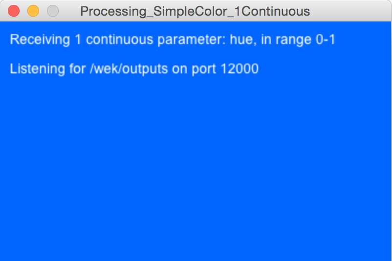

Once you know what Wekinator does, let’s do a quick walkthrough to get you started.
Video Walkthrough
Walkthrough Instructions
1. Download at least one of the following input programs to use to control Wekinator in realtime:
A) On-screen mouse control
OR |
|
| B) Webcam face tracking |
2. Download at least one of the following output programs to control using Wekinator:
A) Continuous control of sound synthesis
OR |
|
| B) Continuous control of animation color |  |
3. Run both your input and output. Make sure you only have one input running at once, and that you only have one output running at once.
4. Run Wekinator. (For now, close any other Wekinator projects you may have open, so there’s only this one.)
5. In Wekinator’s setup screen, enter the following values:
- For “# inputs”:
- Enter 2 if you are using the on-screen mouse control input
- Enter 3 if you are using the webcam face tracker input
- For “# outputs”:
- Enter 3 if you chose continuous control of sound
- Enter 1 if you chose continuous control of animation color
- For “Type”:
- Leave all other settings unchanged.
- Hit “Next >” to proceed.
6. Use the sliders, text boxes, and/or the Randomize button to send new control values to your output (your sound synthesis or animation color). You should hear/see changes in your output as you do this. (If you don’t see this change, make sure you don’t have any other outputs open; if you did, you may have to restart your output again.)
7. Once you have a sound/color you like, start demonstrating which input values you want to use to achieve this sound/color. If you’re using the mouse control, drag the box to a spot on screen where you want this sound/color to happen. If you’re using the face tracker, put your face in a place (x, y, and distance) where you want this sound/color to happen.
8. Hit “Start Recording,” wait about 1/2 second, then hit “Stop Recording.” You should see that the number of examples recorded for each output is now something greater than 0. (If it’s still 0, make sure your input is still running, and that you don’t have multiple inputs or Wekinator projects open at once.)
{kind=link}
9. Repeat steps 6-8 at least one more time: Find a sound/color you like, adjust your inputs to tell Wekinator how you want to get to that sound/color, and then briefly record some examples.
10. Hit “Train” to build a model from all the training examples you just recorded.
11. Hit “Run.” Wekinator will now use the model you’ve just built to compute new output values for every new input value it sees. As you change your inputs (move the mouse or your head), you should hear/see the outputs change.
12. You’ve got it! If you like it, you can save your project and re-load it later to use with the same input & output. Or, you can keep refining your models:
- You can keep adding training examples by repeating steps 6-8 above, then re-training. This will add those examples to all the examples you’ve recorded previously.
- If you don’t like what’s happened when you’ve added examples, you can hit “Delete last recording” to remove them from your training set. You’ll have to re-train in order for this to have an effect.
- If you want to start over, you can delete all examples for a single output by clicking the “X” button in that output’s row. Or you can delete absolutely everything by clicking the “X” on top of your project window:
Congratulations! You’ve finished the walkthrough. Now what?
- To learn about more advanced features, check out the Detailed Instructions page.
- If you run into problems, check out the Troubleshooting page and then head to the Community forums if you don’t find answer.